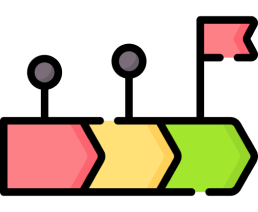

<div class="content">
  <div class="action-box pomodoro" (click)="startPomodoro()">
    <!-- <mat-icon style="color: black">timer</mat-icon> -->
    <div class="text-image-group">
      
      <span *ngIf="!isTimerActive">Start Pomodoro</span>
      <app-pomodoro-timer
        *ngIf="isTimerActive"
        [showTimerOptions]="true"
        [isTimerActive]="false"
        (stopPomodoroEvent)="stopPomodoro()"
      ></app-pomodoro-timer>
    </div>

    <mat-icon matTooltip="Pomodoro Timer">info</mat-icon>
  </div>
  <div class="action-box task-analysis" (click)="showAnalytics()">
    <div class="text-image-group">
      <mat-icon matTooltip="Info">info</mat-icon>
      <span>Check your progress</span>
      <!-- <mat-icon>timeline</mat-icon> -->
    </div>
    
  </div>
</div>
